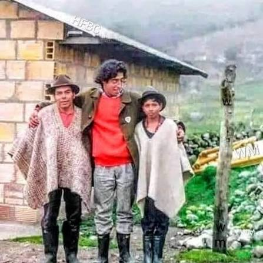
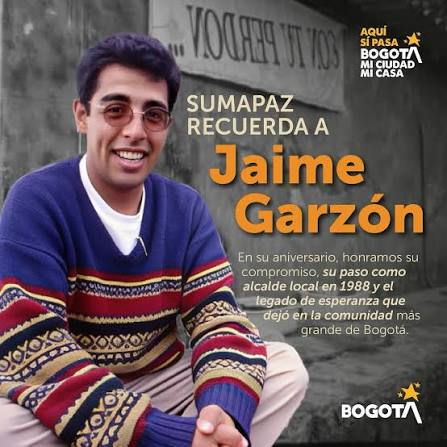
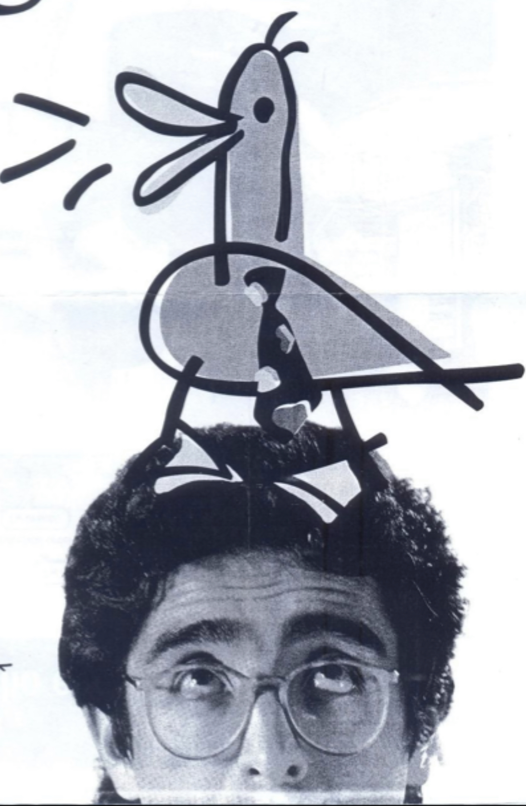
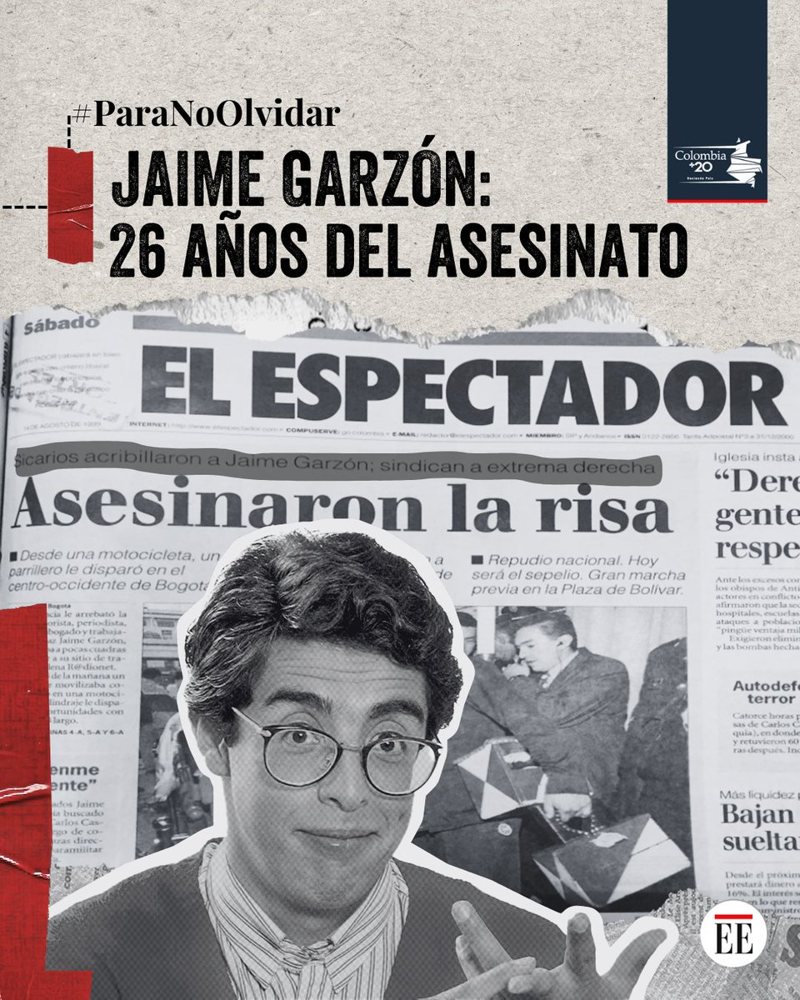

Archivo Clasificado de Video
Estación de Monitoreo Audiovisual
TELE-SÁTIRA
CH 02
La Última Entrevista (1999)
🗄️ Archivero de Cintas VHS
CINTA 01: ÚLTIMA ENTREVISTA
CINTA 02: CONFERENCIA
CINTA 03: EL VISIONERO
CINTA 04: ENTREVISTA J. GARZÓN
Evidencias Gráficas

Sumapaz 1988

Memorias

Cámaras QUAC!

Archivo de Prensa